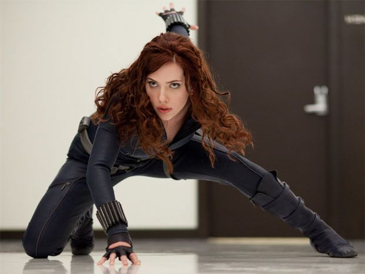

Black Widow is an upcoming American superhero film based on the Marvel Comics character of the same name. Produced by Marvel Studios and distributed by Walt Disney Studios Motion Pictures, it is intended to be the 24th film in the Marvel Cinematic Universe (MCU). The film was directed by Cate Shortland and written by Eric Pearson from a story by Jac Schaeffer and Ned Benson, and stars Scarlett Johansson as Natasha Romanoff / Black Widow alongside Florence Pugh, David Harbour, O-T Fagbenle, William Hurt, Ray Winstone, and Rachel Weisz. Set after Captain America: Civil War (2016), the film sees Romanoff on the run and forced to confront her past. Development of a Black Widow film began in April 2004 by Lionsgate, with David Hayter attached to write and direct. The project did not move forward and the film rights to the character reverted to Marvel Studios by June 2006. Johansson was cast in the role for several MCU films beginning with Iron Man 2 (2010). Marvel and Johansson expressed interest in a solo film several times over the following years, before Schaeffer and Shortland were hired in 2018. Benson and Pearson were added later. Filming took place from May to October, in Norway, Budapest, Morocco, Pinewood Studios in the United Kingdom, and in Atlanta and Macon, Georgia. Black Widow is scheduled to be released in the United States on July 9, 2021, simultaneously in theaters and through Disney+ with Premier Access. It will be the first film in Phase Four of the MCU, and was delayed three times from an original May 2020 release date due to the COVID-19 pandemic.
 Scarlett Johansson as Natasha Romanoff / Black Widow: An Avenger, highly trained former-KGB assassin and former agent of S.H.I.E.L.D.[6] Johansson described the film as an opportunity to show the character as "a woman who has come into her own and is making independent and active choices for herself",[7] while being in a "dark place where she's got no one to call and nowhere to go".[3] Ever Anderson portrays a young Natasha Romanoff.[8] Florence Pugh as Yelena Belova / Black Widow: A sister-figure to Romanoff who was trained in the Red Room as a Black Widow.[9][10][11] Director Cate Shortland said that Romanoff would be "handing [Belova] the baton" in the film, which would "propel another female storyline".[12] Johansson said Belova would stand on her own in comparison to Romanoff, while Pugh said there was a "generational difference" between the two, noting, Belova is "unapologetic, and confident in herself, and curious... and emotionally brave".[13] David Harbour as Alexei Shostakov / Red Guardian: The Russian super-soldier counterpart to Captain America and a father-figure to Romanoff and Belova.[9][14] Harbour said Shostakov has "tons of cracks all over him. And he's not the heroic, noble man that [people] want him to be. He both comically and tragically has a lot of flaws".[15] For Harbour's portrayal, he and Shortland discussed Ricky Gervais' performance in The Office and Philip Seymour Hoffman's in The Savages (2007), "comedy that comes out of real domestic need".David Harbour as Alexei Shostakov / Red Guardian: The Russian super-soldier counterpart to Captain America and a father-figure to Romanoff and Belova.[9][14] Harbour said Shostakov has "tons of cracks all over him. And he's not the heroic, noble man that [people] want him to be. He both comically and tragically has a lot of flaws".[15] For Harbour's portrayal, he and Shortland discussed Ricky Gervais' performance in The Office and Philip Seymour Hoffman's in The Savages (2007), "comedy that comes out of real domestic need". A sister-figure to Romanoff who was trained in the Red Room as a Black Widow.[9][10][11] Director Cate Shortland said that Romanoff would be "handing [Belova] the baton" in the film, which would "propel another female storyline".A sister-figure to Romanoff who was trained in the Red Room as a Black Widow.[9][10][11] Director Cate Shortland said that Romanoff would be "handing [Belova] the baton" in the film, which would "propel another female storyline".